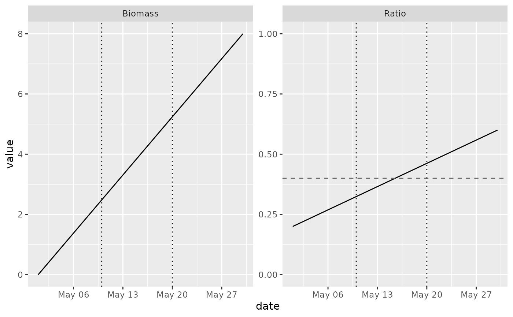

Helpers that return a layer to add to a plot with +:
Usage
kgg_hline(yintercept, data = NULL, ...)
kgg_vline(xintercept, data = NULL, ...)
kgg_limits(..., x = NULL, y = NULL)Arguments
- yintercept, xintercept
Positions of the lines: a vector (numbers, dates...), or the name of a column of
data.- data
Optional data frame with the positions and the facet column(s).
- ...
For
kgg_hline()andkgg_vline(): appearance and other arguments ofkggplot()(linetype,color,linewidth, ...). Forkgg_limits(): the facet values of the panels concerned, named after the facet variable (panel = "Available water ratio").- x, y
Limits to force: the axis range will contain them. Several values are allowed, e.g.
y = c(0, 1).
Details
kgg_hline()andkgg_vline()draw horizontal and vertical reference lines. Give the positions as a vector (the lines appear in every panel), or a data frame and the name of the column holding the positions: if the data frame also has the facet column, the lines appear only in the matching panels (a threshold shown in one panel only).kgg_limits()forces the range of the axes of some panels, which is useful with free scales (facet_args = list(scales = "free_y")): it draws nothing but trains the scales, likeggplot2::geom_blank().
Fixed appearance goes in the arguments: linetype = "dashed",
color = I("grey40"), linewidth = 0.5... (wrap a colour in I(), as for
every kggplot layer: a bare string would be a legend entry).
Examples
d <- data.frame(
date = rep(as.Date("2024-05-01") + 0:29, 2),
panel = rep(c("Ratio", "Biomass"), each = 30),
value = c(seq(0.2, 0.6, length.out = 30), seq(0, 8, length.out = 30))
)
kggplot(d, "date", "value", type = "line", facet = "panel",
facet_args = list(scales = "free_y")) +
# a threshold in the "Ratio" panel only
kgg_hline(data = data.frame(panel = "Ratio", y = 0.4), yintercept = "y",
linetype = "dashed", color = I("grey40")) +
# decision dates in every panel
kgg_vline(as.Date("2024-05-10") + c(0, 10), linetype = "dotted") +
# the "Ratio" panel spans 0 to 1
kgg_limits(panel = "Ratio", y = c(0, 1))
